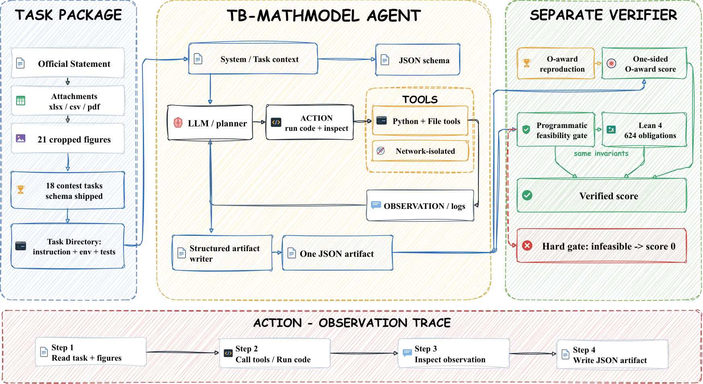

Uses Lean 4 as a second verification layer, re-proving feasibility invariants of agent answers as 624 kernel-checked obligations without Mathlib.
Abstract
Mathematical modeling turns an open-ended real-world problem into assumptions, a model, a solution, and a defended recommendation, and its answers matter only if they are both close to a credible reference and physically feasible; existing benchmarks either score solver fragments or grade reports with an LLM judge, leaving those numbers unchecked. We introduce TB-MathModel (the Terminal-style Mathematical Modeling Bench), the first benchmark to make complete contest-style modeling problems agentic, verifiable, and terminal at once, over 18 real CUMCM and MCM problems (2023–2025). Each task ships the verbatim statement, official attachments, and figures in a containerized terminal; the agent returns one JSON artifact, scored on the numeric core of the final question against a reproduction of the Outstanding-award paper. Two design choices distinguish it: direction-aware, one-sided scoring, which never penalises beating the anchor, and two-layer feasibility verification—a programmatic gate over six decidable invariant forms plus 624 Lean 4 obligations—with a hard gate that zeroes infeasible answers. Each task is scored against a panel of human outstanding papers rather than one, so a model must be close to many accepted answers; across seven multimodal entries (three seeds each) the strongest reach a multi-reference O-Eval of 64.58%, while the \$2.54 open model holds 59.81\% at $1/100$ the cost. TB-MathModel turns the numeric core of modeling into a reproducible, machine-checkable signal for measuring long-horizon modeling competence and for collecting agent trajectories. The source code is available at https://github.com/wxj630/terminal-bench-math-modeling.
Problem
Benchmarks for mathematical modeling either score narrow solver fragments or grade reports with an LLM judge. In both cases the reported numbers are never checked for correctness or physical feasibility.
Approach
TB-MathModel packages 18 real CUMCM and MCM problems (2023–2025) as containerized terminal tasks with the verbatim statements, attachments and figures. Agents return one JSON artifact. The artifact is scored with direction-aware, one-sided scoring against a panel of Outstanding-award paper reproductions. Feasibility is checked in two layers: a programmatic gate over six decidable invariant forms, then Lean 4 theorems that re-prove those invariants on integer-scaled values, giving 624 kernel-checked obligations. An infeasible answer zeroes the task.

Figure 2: The TB-MathModel construction and evaluation pipeline. Build : official statements, attachments, and PDF figures are compiled into a task directory. Run : the agent works inside a network-isolated terminal container and writes one JSON artifact. Evaluate : the artifact is scored by a direction-aware, one-sided panel against an O-award reproduction, and independently checked by a programm
Results
Across seven multimodal model/harness entries, each run with three seeds, the best entry reaches a multi-reference O-Eval of 64.58%. An open model costing $2.54 reaches 59.81%, at about 1/100 the cost of the leaders. The Lean layer turns two soft warnings into proofs and demonstrates non-vacuity of its predicates.